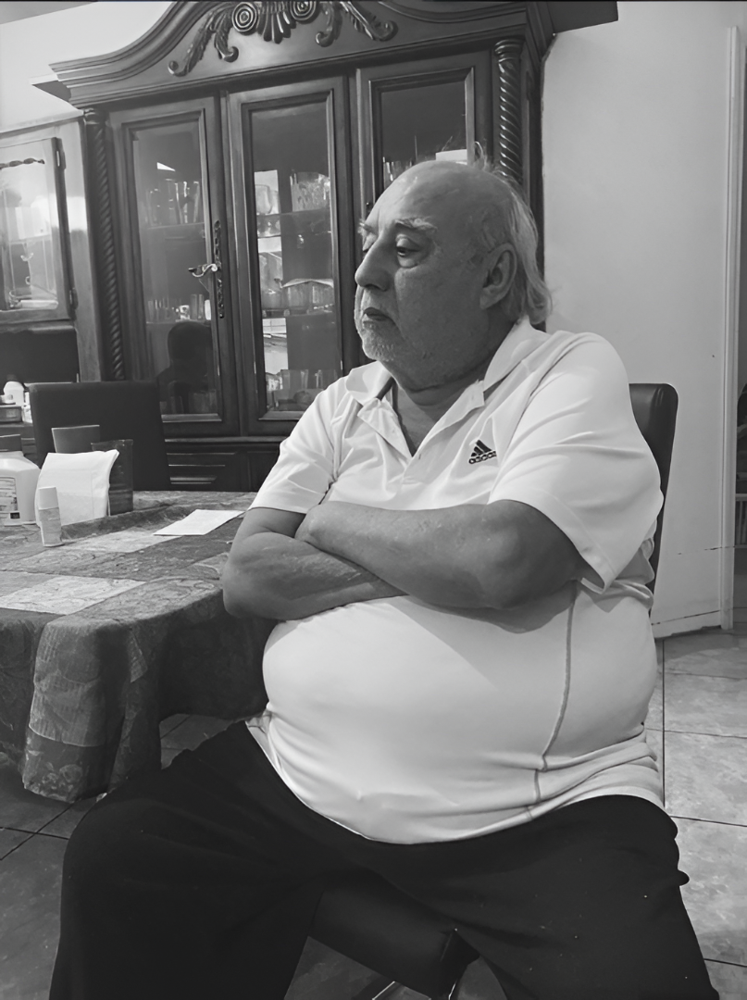

Guía Práctica para el Cuidado del Adulto Mayor
1. Salud Física y Movilidad
- • Prevención de caídas: Eliminar alfombras sueltas y mejorar iluminación en pasillos.
- • Hidratación constante: No esperar a que tengan sed; ofrecer agua cada 2 horas.
- • Cuidado de piel: Uso de cremas hidratantes para evitar lesiones por resequedad.
2. Salud Emocional y Cognitiva
- • Escucha Activa: Validar sus historias aunque se repitan; esto refuerza su identidad.
- • Estimulación: Juegos de mesa sencillos o lectura diaria de noticias.
- • Evitar el aislamiento: Integrarlos en las cenas familiares aunque solo escuchen.
"El cuido no es solo una asistencia médica, es un acto de justicia histórica hacia quienes construyeron nuestro presente."
— Mateo Alexander Chicas
— Mateo Alexander Chicas
Tips para el Cuidador (Autocuidado)
El cuidador familiar suele sufrir fatiga crónica. Para seguir cuidando, debes cuidarte:
Establecer turnos
Dormir 7 horas
Pedir ayuda profesional
Realidad del Adulto Mayor en El Salvador
En nuestro país, el abandono y la desprotección legal son barreras constantes. El proyecto de la Dinastía Chicas busca no solo informar, sino incidir en la protección del patrimonio y la dignidad de los ancianos.
70%
Falta de cobertura social
24/7
Dedicación que promovemos
In Memoriam

Hugo Alexander Chicas
La inspiración detrás del líder
Su valentía y amor por la familia son los cimientos que hoy permiten a Mateo Alexander Chicas liderar este movimiento de cambio social.